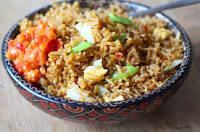
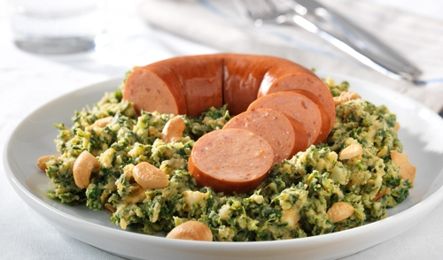
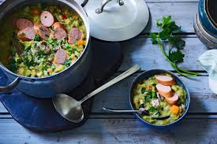
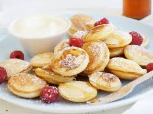

Hollandaise d'origine, Française d'adoption je vis en France depuis plus de 40 ans.
J'adore faire la cuisine ! La cuisine hollandaise a mauvaise réputation ...
A tort à mon avis !
|  |
Nasi GorengLe nom nasi goreng vient de l'indonésien : "nasi" signifie riz cuit et "goreng" qui signifie "sauté" |
|  |
Boerenkool stamppotIl s'agit de purée de patate mélangée à du boerenkool -chou frisé en français. On peut varier les plaisir et remplacer le chou par des endives, du poireau ou de la carotte ce que donne alors du Hutspot. |
|  |
SnertC'est LA soupe néerlandaise qu'on fait en hiver (très bonne mais pas du tout light), et chaque famille a sa recette perso qui peut varier (plus ou moins de céleri par exemple). Ca se mange surtout en hiver, dès qu'il commence à faire bien froid |
|  |
PoffertjesLes poffertjes sont des mini crêpes ou pancakes cuits dans une poêle spéciale à alvéoles, qui ont plus ou moins la taille de petits blinis. C'est une spécialité néerlandaise. Aux Pays-Bas, on trouve souvent des petits stands dédiés à la fabrication des poffertjes. On vous les vend sur une petite plaque en carton généreusement saupoudrés de sucre glace, et une touche de beurre que l'on laisse fondre... |